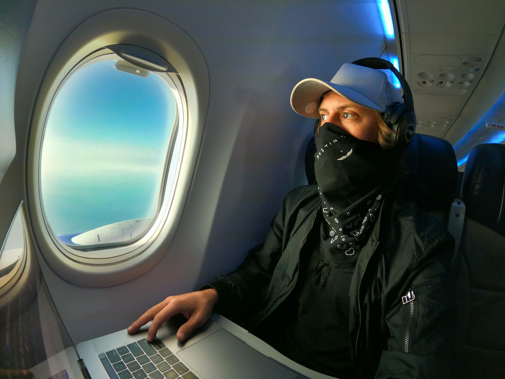

People typically become digital nomads due to a desire to travel and location independence. and the lowered cost of living often provided by leaving expensive cities. Cost of living ranks chief among the criteria that digital nomads value when selecting a destination, followed by climate, diversity, and available leisure activities. There are also benefits for employers, as a 2021 study concluded that there is a causal relationship between worker productivity and the option to "work from anywhere," as workers who were freed from geographic limitations showed an average output increase of 4.4% while controlling for other factors. Digital nomads also typically spend more than 35% of their income in the location in which they are staying, an injection of capital that has been shown to stimulate local economies in popular destinations, primarily promoting the service industry and the sale of consumer goods.
